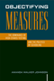

Browse
other Titles:
A B C
D E F
G H I
J K L
M N O
P Q R
S T U
V W X
Y Z |
 |
Objectifying Measures
The Dominance of High-Stakes Testing and the Politics of Schooling
Johnson, Amanda Walker
222 pp • 5.5x8.25 • Spring 2009
paper 978-1-59213-906-4
cloth 978-1-59213-905-7
|
|
Obligations
to Future Generations
edited
by Sikora, R. I. and Brian Barry
200 pp • Fall 1978
paper 978-0-87722-128-9
cloth 978-0-87722-132-6 |
 |
Of
Others Inside
Insanity, Addiction, and Belonging in America
Weinberg,
Darin, foreword by Bryan S. Turner
256 pp • 6x9 • Fall 2005
paper 978-1-59213-404-5
cloth 978-1-59213-403-8
|
 |
Officially
Gay
The Political Construction of Sexuality by the U.S. Military
Lehring,
Gary L.
248 pp • 5.5x8.25 • Spring 2003
paper 978-1-59213-035-1
cloth 978-1-59213-034-4
|
|
The
Old Christian Right
The Protestant Far Right from the Depression to the Cold War
Ribuffo,
Leo
388 pp • Spring 1983
paper 978-0-87722-598-0
cloth 978-0-87722-297-2 |
|
On Any Given Sunday
A Life of Bert Bell
Lyons, Robert S.
352 pp • 6x9 • Fall 2009
cloth 978-1-59213-731-2
|
 |
On
Becoming Filipino
Selected Writings of Carlos Bulosan
Bulosan,
Carlos, edited by E. San Juan, Jr.
240 pp • 5.5x8.25 • Spring 1995
paper 978-1-56639-310-2
cloth 978-1-56639-309-6 |
|
On Intellectual Activism
Collins, Patricia Hill
278 pp • 6x9 • Fall 2012
paper 978-1-4399-0961-4
cloth 978-1-4399-0960-7
|
 |
On
Strike at Hormel
The Struggle for a Democratic Labor Movement
Green,
Hardy, foreword by David Moberg
369 pp • Fall 1989
paper 978-0-87722-832-5
cloth 978-0-87722-635-2 |
 |
On
the Man Question
Gender and Civic Virtue in America
Kann,
Mark E.
352 pp • Spring 1991
cloth 978-0-87722-807-3 |

|
On the Margins of Citizenship
Intellectual Disability and Civil Rights in Twentieth-Century America
Carey, Allison
286 pp • 6x9 • Fall 2009
paper 978-1-59213-698-8
cloth 978-1-59213-697-1
|
|
On the Stump
Campaign Oratory and Democracy in the United States, Britain, and Australia
Scalmer, Sean
232 pp • 6x9 • Fall 2017
paper 978-1-4399-1504-2
cloth 978-1-4399-1503-5
|

|
Once the American Dream
A comprehensive national study of inner-ring suburbs in the U.S.
Hanlon, Bernadette
224 pp • 6x9 • Fall 2009
paper 978-1-59213-937-8
cloth 978-1-59213-936-1
|
 |
One-Eyed
Science
Occupational Health and Women Workers
Messing,
Karen, foreword by Jeanne Mager Stellman
264 pp • 5.5x8.2 • Spring 1998
paper 978-1-56639-598-4
cloth 978-1-56639-597-7
|
|
One Last Read
The Collected Works of the World's Slowest Sportswriter
edited by Didinger, Ray
384 pp • 6x9 • Fall 2007
cloth 978-1-59213-600-1
|

|
One Less Car
Bicycling and the Politics of Automobility
Furness, Zack
360 pp • 6x9 • Spring 2010
paper 978-1-59213-613-1
cloth 978-1-59213-612-4
|
 |
Opera
Muliebria
Women and Work in Medieval Europe
Herlihy,
David
159 pp • Spring 1990
cloth 978-0-87722-714-4 |
|
Opposition
Planning in Wales and Appalachia
Clavel,
Pierre
251 pp • Fall 1982
cloth 978-0-87722-276-7 |
 |
Oral History and Public Memories
edited by Hamilton, Paula and Linda Shopes
320 pp • 6x9 • Spring 2008
paper 978-1-59213-141-9
cloth 978-1-59123-140-2
|
|
Ordinary
Lives
Platoon 1005 and the Vietnam War
Ehrhart,
W. D.
344 pp • 6x9 • Spring 1999
cloth 978-1-56639-674-5
|
 |
Ordinary
Poverty
A Little Food and Cold Storage
DiFazio,
William 232 pp • 6x9 • Fall 2005
paper 978-1-59213-458-8
cloth 978-1-59213-014-6
|
 |
Organizing
Access to Capital
Advocacy and the Democratization of Financial Institutions
edited
by Squires, Gregory D.
248 pp • 7x10 • Spring 2003
paper 978-1-59213-026-9
cloth 978-1-59213-025-2
|
 |
Organizing
Asian American Labor
The Pacific Coast Canned-Salmon Industry, 1870-1942
Friday,
Chris
296 pp • 6x9 • Spring 1994
paper 978-1-56639-398-0
cloth 978-1-56639-139-9 |
|
Organizing
In Hard Times
Labor and Neighborhoods In Hartford
Simmons,
Louise B.
200 pp • 5.5x8.25 • Spring 1994
paper 978-1-56639-156-6
cloth 978-1-56639-155-9 |
 |
Organizing
the Movement
The Roots and Growth of ACORN
Delgado,
Gary
256 pp • Fall 1985
paper 978-0-87722-492-1
cloth 978-0-87722-393-1 |
 |
Orientals
Asian Americans in Popular Culture
Lee,
Robert G.
288 pp • 6x9 • Fall 1998
paper 978-1-56639-753-7
cloth 978-1-56639-658-5
|

|
The Origins of Capitalism and the "Rise of the West"
Mielants, Eric H.
256 pp • 6x9 • Spring 2008
paper 978-1-59213-576-9
cloth 978-1-59213-575-2
|
 |
The
Origins of Southern Sharecropping
Royce,
Edward
288 pp • 5.5x8.25 • Fall 1993
cloth 978-1-56639-069-9 |
|
Orixás
Os Deuses Vivos da África
Orishas
The Living Gods of Africa in Brazil
Nascimento,
Abdias do, foreword by Molefi Kete Asante
170 pp • 10x11 • Fall 1997
cloth 978-85-85853-013 |
|
Orphanages
Reconsidered
Child Care Institutions in Progressive Era Baltimore
Zmora,
Nurith
256 pp • 6x9 • Fall 1993
paper 978-1-56639-465-9
cloth 978-1-56639-071-2 |
 |
"Other
Sheep I Have"
The Autobiography of Father Paul M. Washington
Washington,
Paul M. with David McI. Gracie, afterword by Barbara Harris
280 pp • 5.5x8.25 • Spring 1994
paper 978-1-56639-178-8
cloth 978-1-56639-177-1
|
|
Out
in the South
edited
by Dews, Carlos L. and Carolyn Leste Law
256 pp • 7x10 • Fall 2000
paper 978-1-56639-814-5
cloth 978-1-56639-813-8
|

|
Out in the Union
A Labor History of Queer America
Frank, Miriam
240 pp • 6x9 • Spring 2014
paper 978-1-4399-1140-2
cloth 978-1-4399-1139-6
|
 |
Out
of the Jungle
Jimmy Hoffa and the Remaking of the American Working Class
Russell,
Thaddeus
296 pp • 6x9 • Spring 2003
paper 978-1-59213-027-6
|

|
Outside the Paint
When Basketball Ruled at the Chinese Playground
Yep, Kathleen S.
216 pp • 5.5x8.25 • Spring 2009
cloth 978-1-59213-942-2
|

|
The Outsider
Albert M. Greenfield and the Fall of the Protestant Establishment
Rottenberg, Dan
384 pp • 9x9 • Fall 2014
cloth 978-1-43990-841-9 |
|
Over
There
The Story of America's First Great Overseas Crusade
Friedel,
Frank, foreword by Edward M. Coffman
270 pp • Spring 1990
cloth 978-0-87722-718-2 |

|
Oye Como Va!
Hybridity and Identity in Latino Popular Music
Pacini Hernandez, Deborah
238 pp • 6x9 • Fall 2009
paper 978-1-4399-0090-1
cloth 978-1-4399-0089-5
|